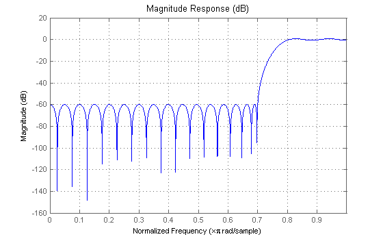
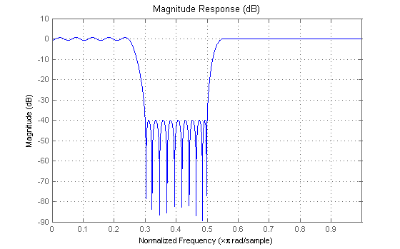
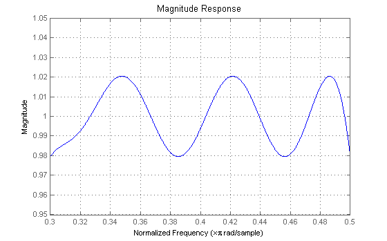
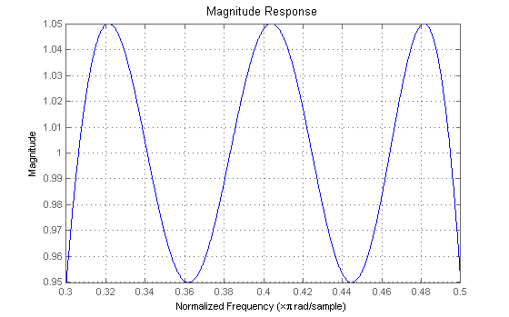
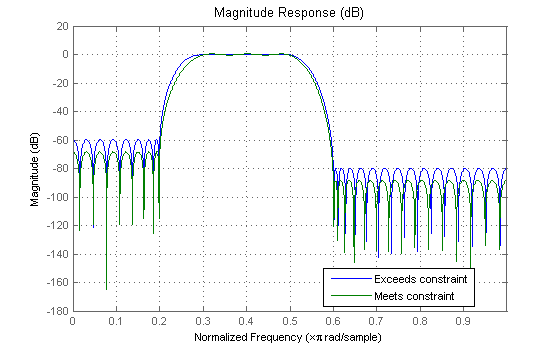
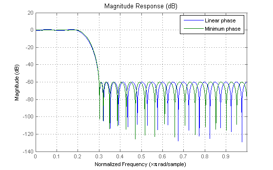

This demo provides an overview of the FIRCBAND function for the design of FIR filters with a constrained maximum ripple in one or more of the frequency bands of the filter.
FIRCBAND constrains the maximum ripple in one or more bands of a filter to a specified value. The usage syntax is similar to FIRPM/FIRGR, with an added parameter (a cell-array) specifying which bands are constrained. For example, consider a highpass filter, the stopband of which we wish to constrain to a maximum peak ripple of 1e-3 (or -60 dB). The syntax to do so is:
N = 40; % Filter order Ws = 0.7; % Normalized stopband-edge frequency Wp = 0.8; % Normalized passband-edge frequency b = fircband(N,[0, Ws, Wp, 1],[0, 0, 1, 1],[1e-3, 1],{'c','w'}); hfvt = fvtool(b); set(hfvt, 'Color', [1 1 1])
The string 'c' in the cell-array at the end of the call specifies that the corresponding band (the stopband in this example) is specified via a constraint, i.e. 1e-3 is a constraint not a weight. The 'w' string in the cell-array indicates that the corresponding band is weighted. There must always be at least one weighted band.
In the case of lowpass and highpass filters, the specific weight is ignored (but still has to be specified) because there is no other band to weigh against (since the only other band is constrained). So the particular value of the weight (1 in this case) is not meaningful. To illustrate, the following two calls produce the same filter (or actually just about the same filter, the norm is not quite zero - more on this below)
b = fircband(N,[0, Ws, Wp, 1],[0, 0, 1, 1],[1e-3, 1],{'c','w'});
b2 = fircband(N,[0, Ws, Wp, 1],[0, 0, 1, 1],[1e-3, 1000],{'c','w'});
norm(b-b2)
ans = 1.2034e-016
The particular weight values become meaningful in filters with more than one unconstrained band. For instance, consider a bandstop filter where we constrain the stopband ripple to 0.01 (or -40 dB):
b = fircband(80,[0 .25 .3 .5 .55 1],[1 1 0 0 1 1],[1 .01 10],{'w','c','w'});
set(hfvt, 'Filters', dfilt.dffir(b));
 The higher-frequency passband has less ripple than the lower-frequency passband because it is weighted by a factor of 10. Obviously, if we were to constrain two of the three bands, the remaining weight would be ignored.
While we have stated that there should be no dependence between constrained bands and unconstrained bands, in a few cases, the algorithm does not behave quite this way. We have already noticed a very slight difference in a highpass design when changing the weight value (which should be ignored). In some cases, the difference can be significant. Constraints may be exceeded affecting the remaining bands of the filter. For example, consider the following bandpass design:
b = fircband(60,[0 .2 .3 .5 .6 1],[0 0 1 1 0 0],[1 .05 10],{'w','c','w'});
Close inspection of the passband reveals that the constraint is being over-satisfied.
set(hfvt, 'Filters', dfilt.dffir(b), 'MagnitudeDisplay','Magnitude'); axis([0.3, 0.5, 0.95, 1.05]);
As a result, the stopbands are being "pulled-up" from where they could be if the constraint was met exactly. To correct this, one can increase the weight-value of the unconstrained bands while maintaining their relative weight:
b2 = fircband(60,[0 .2 .3 .5 .6 1],[0 0 1 1 0 0],[10 .05 100],{'w','c','w'});
set(hfvt, 'Filters', dfilt.dffir(b2));
axis([0.3, 0.5, 0.95, 1.05]);
 The difference between the two stopbands is evident if we overlay the magnitude responses
set(hfvt, 'Filters', [dfilt.dffir(b) dfilt.dffir(b2)], ... 'MagnitudeDisplay','Magnitude (dB)'); legend(hfvt,'Exceeds constraint','Meets constraint');
It is possible to design minimum-phase filters using FIRCBAND by including a trailing 'minphase' directive. Here we compare a minimum-phase design to a linear-phase design:
b = fircband(N,[0, .2, .3, 1],[1, 1, 0, 0],[1, 1e-3],{'w','c'});
b2 = fircband(N,[0, .2, .3, 1],[1, 1, 0, 0],[1, 1e-3],{'w','c'},'minphase');
set(hfvt, 'Filters', [dfilt.dffir(b) dfilt.dffir(b2)], ...
'MagnitudeDisplay','Magnitude (dB)');
legend(hfvt,'Linear phase','Minimum phase');
 Both filters meet the stopband constraint of 60 dB, but the minimum-phase filter has a smaller passband ripple as expected.